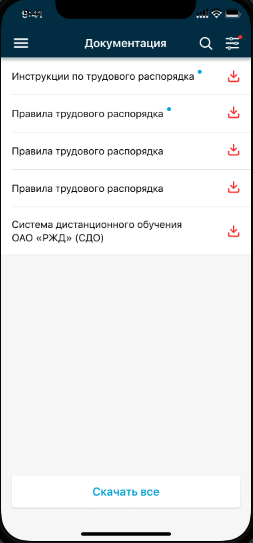
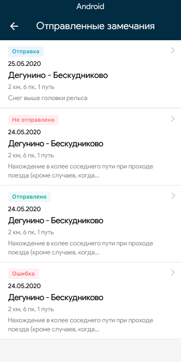

Моя работа
В разделе отображаются сведения о плановом графике работы:
- Оперативные маршруты (данные журнала явок);
- Текущие маршруты (список ЭММ);
- Принятые ЦОТУ (по данным ЦОММ).
Раздел состоит из трех вкладок. При переходе в раздел по умолчанию отображается вкладка «Оперативные».
Вкладка «Оперативные»
На вкладке «Оперативные» отображается информация о предстоящих маршрутах, а также по домашнему отдыху, выходным, очередному отпуску на ближайшие 30 дней.
По запланированным предстоящим работам возможен просмотр детальной информации. Для просмотра детальной информации необходимо нажать на карточку маршрута.

Детальная информация о предстоящем маршруте включает в себя следующие сведения:
- плановое время явки локомотивной бригады;
- дата и время сдачи локомотива;
- место явки локомотивной бригады;
- место приемки локомотива (при наличии);
- время приемки локомотива (при наличии)
- вид использования;
- состав локомотивной бригады;
- станция отправления (при наличии);
- станция прибытия;
- использование на маршруте (отдых в пункте оборота, езда с оборота);
В случае наличия предстоящего отдыха в пункте оборота в информации о маршруте дополнительно отобразится иконка справа от наименования станции прибытия.
На экране подробной информации о маршруте также доступны следующие возможности:
- загрузка документации, соответствующей маршруту;
- формирование и отправка замечаний по форме ТУ-137;
- просмотр списка локомотивов на станции отправления;
- просмотр информации по допускам;
- проверка наличия предупреждений на участке.
Проверка на наличие предупреждений осуществляется путем нажатия на кнопку «Проверить предупреждения». В случае наличия предупреждений будет осуществлена загрузка файла с предупреждениями.
Для просмотра имеющихся допусков необходимо нажать на кнопку «Допуски».
В подразделе отобразятся следующие сведения:
- учетный номер маршрута;
- признак допуска к работе;
- признак допуска ПРМО;
- признак допуска по прохождению предрейсового инструктажа.
Для перехода в подраздел загрузки документации необходимо нажать на кнопку «Скачать документацию», расположенную в нижней части экрана.
В подразделе отображается нормативная и техническая документация ЦТ по различным тематикам.
Для загрузки документа необходимо нажать на иконку
Загрузка всех отображаемых на экране документов осуществляется по нажатию на кнопку «Скачать все».
Возможные действия по поиску и фильтрации документов описаны в п. 4.5 настоящего руководства пользователя.
Форма заполнения и отправки замечаний открывается при нажатии на кнопку «Отправить замечание».
В открывшейся форме возможно указание следующих данных:
- станция места замечания;
- признак «Замечание относятся к участку»;
- вторая станция места замечания (если нарушение было на перегоне);
- километр
- пикет
- путь
- вид нарушения;
- признак наезда;
- количество пострадавших;
- признак наличия видеозаписи;
- информация о том, кому направляется:
- кому сообщено – справочник (ДНЦ, ДСП, ТЧД);
- кому сообщено, станция или предприятие;
- кому сообщено, ФИО.
Отправка замечания производится по нажатию на кнопку «Отправить».
Также к замечанию можно прикрепить фотографию или видеозапись.
Просмотр локомотивов на станции отправления осуществляется при клике на кнопку «Локомотивы на станции».
Красный восклицательный знак означает, что локомотив находится в группе риска. При клике на серию/номер локомотива отображается его карточка.
По клику на фотографию локомотива она отображается в полном размере.
При наличии координат местоположения локомотива отображается расстояние до него и при клике на это расстояние местоположение локомотива отобразится на карте.
Если для выбранной серии локомотива существует чек-лист приемки, то его можно открыть по клику на «Смотреть чек-лист».
Переход на форму создания записи в журнале формы ТУ-152 осуществляется нажатием на кнопку «ТУ-152».
На форме создания записи возможно указание времени приемки (автоматически заполняется текущим временем, если пусто), времени сдачи (автоматически заполняется текущим временем, если пусто и время приемки заполнено), сведений о состоянии локомотива и его отдельных устройств в соответствии с требованиями к ведению формы ТУ-152:
- замечание к техническому состоянию локомотива;
- сведения о ключевом инвентарном оборудовании.
После нажатия кнопки отобразится список ключевого инвентарного оборудования указанного на предыдущем шаге локомотива.
Для каждой единицы ключевого инвентарного оборудования возможно указание следующих данных:
- нет в наличии;
- сломано;
- некомплект;
При необходимости имеется возможность указания комментария.
Также можно просмотреть список замечаний к локомотиву.
И добавить новое замечание, приложив фотографию.

Отправка записи в журнал осуществляется по нажатии на кнопку «Оправить» после возвращения на экран с полным списком инвентаря.
Вкладка «Текущие»
Вкладка предназначена для просмотра машинистом открытых электронных маршрутов машиниста с возможностью прикрепления и отправки документов в расшифровку.
При выборе пункта «Документы в расшифровку» отобразится меню для выбора типа документа.
После выбора типа документа отобразится форма добавления документа.
К документу можно прикрепить несколько файлов в формате JPEG. Когда добавление файлов к документу завершено необходимо нажать кнопку «Добавить к маршруту». Отобразится список документов, добавленных к выбранному маршруту.
Чтобы добавить к маршруту другой документ, необходимо нажать кнопку «Добавить документ».
По кнопке «Отправить в расшифровку» документы будут отправлены в АСУТ НБД-2, но только в случае закрытия ЭММ на электронном терминале самообслуживания.
Вкладка «Принятые ЦОТУ»
На вкладке «Принятые ЦОТУ» отображается информация о прошедших маршрутах машиниста (подписанных машинистом на ЭТСО и принятых в ЦОММ) с указанием даты и времени явки, а также даты и времени окончания работы.
По прошедшим работам возможен просмотр детальной информации. Для просмотра детальной информации необходимо нажать на карточку маршрута.
В детальной информации отображаются следующие сведения:
- дата и время начала явки;
- дата и время окончания работ;
- серия/номер локомотива;
- код секции;
- признак хода по расписанию;
- тип документа;
- номер документа.
Сведения по трудозатратам, физическим показателям, скорости и параметрам ТЭР описаны в п. 4.3.7.
Электронные маршруты
Раздел предназначен для просмотра машинистом открытых электронных маршрутов машиниста с возможностью внесения информации по форме ТУ-3 и ТХУ-3.
По выбранному маршруту возможен просмотр информации по следующим разделам:
- основные данные;
- следование резервной бригады (пассажиром);
- сведения о пути следования и работы;
- сведения о наборе и расходе ТЭР.
В основных данных отображаются следующие сведения без возможности корректировки:
- тип ЭММ;
- дата и время начала работы;
- дата и время окончания работы;
- фактическая дата и время начала отдыха;
- фактическая дата и время окончания отдыха.
В сведениях о следовании пассажиром возможно откорректировать следующие данные:
- номер поезда;
- станция отправления;
- дата и время отправления;
- место прибытия;
- дата и время прибытия.
В части сведений о пути следования отображаются станции отправления и прибытия без возможности удаления или добавления новых.
По каждой станции можно откорректировать следующие данные:
- номер парка;
- время прибытия / начало маневров;
- время отправления / конец маневров;
- продолжительность поездных маневров;
- продолжительность простоя у запрещающих сигналов на станции;
- продолжительность простоя у запрещающих сигналов на перегоне.
Сведения о секциях отображаются в виде «серия локомотива / номер / код секции».
По каждой секции можно откорректировать следующие данные:
- показания счетчика рекуперации при приемке ТПС;
- показания счетчика рекуперации при сдаче ТПС;
- показания счетчика при приемке ТПС;
- показания счетчика при сдаче ТПС;
- показания счетчика отопления при приемке ТПС;
- показания счетчика отопления при сдаче ТПС;
- признак «неисправный счетчик».
После указания всей необходимых данных отправка информации осуществляется путем нажатия на кнопку «Отправить».
Инструктаж
Раздел предназначен для просмотра актуальных материалов предрейсового и внеочередного инструктажа для машиниста и помощника машиниста.
Все виды инструктажей представлены в виде единого списка. Для просмотра вида инструктажа необходимо открыть инструктаж. Вид будет указан в атрибуте «уровень инструктажа».
Для просмотра подробной информации необходимо нажать на область с наименованием интересующего инструктажа.
По материалу отображается информация:
- название темы;
- уровень инструктажа;
- ссылка на материал (при наличии);
- информация по инструктажу (при наличии);
- крайняя дата ознакомления;
- признак усвоения материала (отображается только после регистрации явки на терминале в депо и медосмотра).

В случае наличия теста для проверки усвоения материала, в нижней части экрана будет отображена кнопка «Пройти тест».
При нажатии на кнопку «Пройти тест» отображается вопрос по теме материала с возможными вариантами ответов. Для прохождения теста требуется выбрать вариант ответа и нажать на кнопку «Проверить».
В результате отобразится верный вариант ответа и ответ, который был выбран пользователем.
Для перехода к следующему вопросу необходимо нажать кнопку «Далее».
Для завершения прохождения теста необходимо нажать на кнопку «Завершить».
После просмотра материала независимо от прохождения теста и его результатов пользователь должен отметить признак «Материал усвоен». Это доступно только после прохождения медосмотра в депо. После этого инструктаж пропадет из списка.
Замечания ТУ-137
В разделе отображаются замечания, отправленные пользователем, и статусы их отправки.
